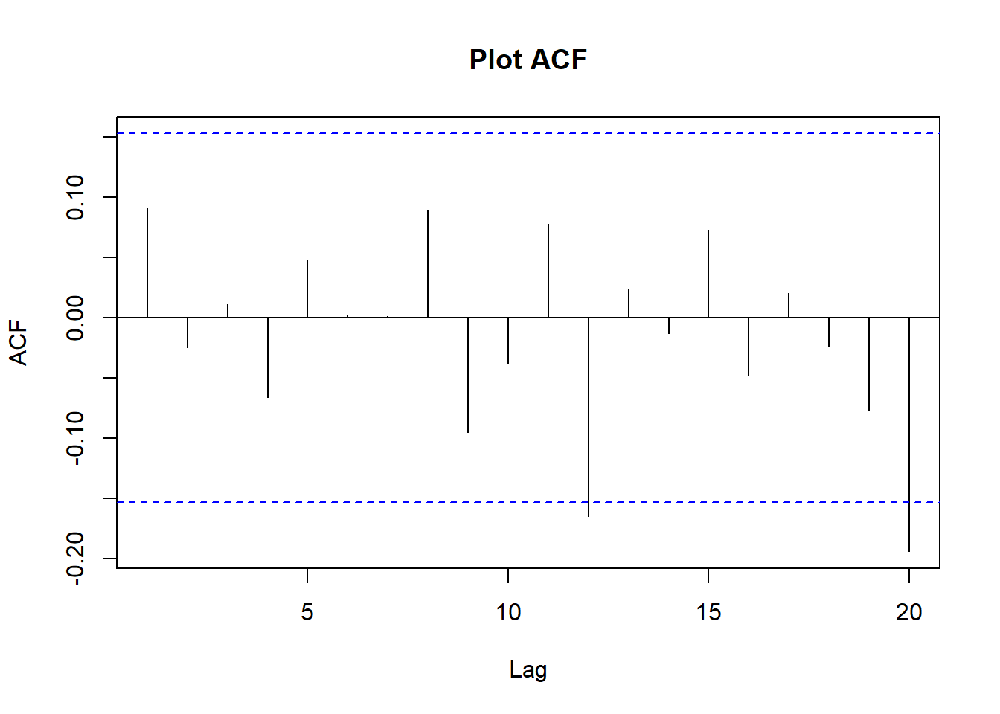

Bab 4 Analisis Intervensi pada model ARIMA
library(forecast)
library(TSA)
library(ggplot2)Akan dilakukan pemodelan di tiga periode: saat awal COVID, rebuilding setelah COVID pada akhir tahun 2020, dan masa sekarang
4.1 Awal COVID
Secara umum metode pemulusan cukup buruk dalam meramal harga minyak saat COVID dan perang Rusia-Ukraina. Oleh karena itu, coba ambil data saat COVID terlebih dahulu. Jika dilihat dari tabel di bawah, harga minyak mulai turun pada minggu kesembilan 2020 (28 Februari 2020), dan tetap turun. Oleh karena itu, ambil dua titik data awal dari penurunan tersebut (28 Februari dan 06 Februari) untuk menandakan intervensi tersebut, lalu coba ramal titik-titik selanjutnya.
knitr::kable(weeklyCrude[160:170])| Week | Date | Close | Dist | 6DW | 8DW | 2017 - Siklik | Awal 2018 - harga naik | Akhir 2018 - harga turun | Pra-COVID | COVID | Pemulihan | Vaksin, Varian | 2022 |
|---|---|---|---|---|---|---|---|---|---|---|---|---|---|
| 2020-W04 | 2020-01-24 | 54.19 | 7 days | 0 | 0 | FALSE | FALSE | FALSE | TRUE | FALSE | FALSE | Lainnya | Lainnya |
| 2020-W05 | 2020-01-31 | 51.56 | 7 days | 0 | 0 | FALSE | FALSE | FALSE | TRUE | FALSE | FALSE | Lainnya | Lainnya |
| 2020-W06 | 2020-02-07 | 50.32 | 7 days | 0 | 0 | FALSE | FALSE | FALSE | FALSE | TRUE | FALSE | Lainnya | Lainnya |
| 2020-W07 | 2020-02-14 | 52.05 | 7 days | 0 | 0 | FALSE | FALSE | FALSE | FALSE | TRUE | FALSE | Lainnya | Lainnya |
| 2020-W08 | 2020-02-21 | 53.38 | 7 days | 0 | 0 | FALSE | FALSE | FALSE | FALSE | TRUE | FALSE | Lainnya | Lainnya |
| 2020-W09 | 2020-02-28 | 44.76 | 7 days | 0 | 0 | FALSE | FALSE | FALSE | FALSE | TRUE | FALSE | Lainnya | Lainnya |
| 2020-W10 | 2020-03-06 | 41.28 | 7 days | 0 | 0 | FALSE | FALSE | FALSE | FALSE | TRUE | FALSE | Lainnya | Lainnya |
| 2020-W11 | 2020-03-13 | 31.73 | 7 days | 0 | 0 | FALSE | FALSE | FALSE | FALSE | TRUE | FALSE | Lainnya | Lainnya |
| 2020-W12 | 2020-03-20 | 22.43 | 7 days | 0 | 0 | FALSE | FALSE | FALSE | FALSE | TRUE | FALSE | Lainnya | Lainnya |
| 2020-W13 | 2020-03-27 | 21.51 | 7 days | 0 | 0 | FALSE | FALSE | FALSE | FALSE | TRUE | FALSE | Lainnya | Lainnya |
| 2020-W14 | 2020-04-03 | 28.34 | 7 days | 0 | 0 | FALSE | FALSE | FALSE | FALSE | TRUE | FALSE | Lainnya | Lainnya |
4.1.1 ARIMA
Ambil semua data sampai 6 Maret 2020 (observasi ke-166) sebagai data latih. Titik intervensi COVID yang diambil adalah 28 Februari (observasi ke-165).
wcrude.covid<-subset(weeklyCrude, Date<=as.Date("2020-04-13"))
wcrude.train<-subset(wcrude.covid, Date<=as.Date("2020-03-06"))4.1.1.1 Cek Kestasioneran Data dan Identifikasi
acf(wcrude.train$Close,
main="ACF Harga Minyak pra-COVID")
Dari plot time series yang dibuat saat eksplorasi telah ditunjukkan bahwa data tidak stasioner. Plot ACF tersebut juga menunjukkan bahwa data tidak stasioner karena pola turun secara perlahan. Untuk itu perlu dilakukan differencing:
WCrude.covid_diff <- diff(wcrude.train$Close, differences= 1)
#Plot time series
ts.plot(WCrude.covid_diff,
main = "First Difference Haarga Minyak pra-COVID",
ylab = " ") Berdasarkan hasil plot time series dapat dilihat bahwa data telah stasioner pada suatu nilai tertentu. Namun, terlihat lonjakan di akhir sebagai efek dari COVID. Untuk memastikannya maka akan dilihat plot ACF:
Berdasarkan hasil plot time series dapat dilihat bahwa data telah stasioner pada suatu nilai tertentu. Namun, terlihat lonjakan di akhir sebagai efek dari COVID. Untuk memastikannya maka akan dilihat plot ACF:
acf(WCrude.covid_diff, lag.max = 20, main = "Plot ACF")
pacf(WCrude.covid_diff, lag.max = 20, main = "Plot PACF")Melalui plot ACF dan PACF dapat dilihat bahwa data sudah stasioner. Plot ACF dan PACF langsung cut off pada lag 1.
Untuk memastikannya dapat dilakukan Uji Formal Augmented Dickey-Fuller Test sebagai berikut.
Hipotesis: \[ \begin{aligned} H_0&: \text{ Data tidak stasioner}\\ H_1&: \text{ Data stasioner} \end{aligned} \]
#ADF Test#
aTSA::adf.test(WCrude.covid_diff)## Augmented Dickey-Fuller Test
## alternative: stationary
##
## Type 1: no drift no trend
## lag ADF p.value
## [1,] 0 -11.57 0.01
## [2,] 1 -8.47 0.01
## [3,] 2 -6.75 0.01
## [4,] 3 -6.32 0.01
## [5,] 4 -5.18 0.01
## Type 2: with drift no trend
## lag ADF p.value
## [1,] 0 -11.55 0.01
## [2,] 1 -8.45 0.01
## [3,] 2 -6.74 0.01
## [4,] 3 -6.31 0.01
## [5,] 4 -5.17 0.01
## Type 3: with drift and trend
## lag ADF p.value
## [1,] 0 -11.61 0.01
## [2,] 1 -8.53 0.01
## [3,] 2 -6.81 0.01
## [4,] 3 -6.39 0.01
## [5,] 4 -5.26 0.01
## ----
## Note: in fact, p.value = 0.01 means p.value <= 0.01Karena nilai P-Value = 0.01 < alpha = 0.05, maka tolak H0. Artinya model tersebut stasioner.
eacf(WCrude.covid_diff)## AR/MA
## 0 1 2 3 4 5 6 7 8 9 10 11 12 13
## 0 o o o o o o o o o o o x o o
## 1 x o o o o o o o o o o o o o
## 2 x o o o o o o o o o o o o o
## 3 x x x o o o o o o o o o o o
## 4 x x x o o o o o o o o o o o
## 5 o o o x o o o o o o o o o o
## 6 x o x x o o o o o o o o o o
## 7 o o o x o o o o o o o o o oBerdasarkan plot EACF tersebut, diperoleh dugaan model lainnya yaitu ARIMA (0,1,1), ARIMA (1,1,0), ARIMA(1,1,1),dan ARIMA(1,1,2). Sehingga setelah dilakukan spesifikasi, terdapat 4 model tentatif yang dapat diuji.
4.1.1.2 Pendugaan Parameter
model1.Wcrude=Arima(wcrude.train$Close, order=c(0,1,1),method="ML")
model2.Wcrude=Arima(wcrude.train$Close, order=c(1,1,0),method="ML")
model3.Wcrude=Arima(wcrude.train$Close, order=c(1,1,1),method="ML")
model4.Wcrude=Arima(wcrude.train$Close, order=c(1,1,2),method="ML")
knitr::kable(
cbind(c("ARIMA (0,1,1)","ARIMA (1,1,0)","ARIMA (1,1,1)","ARIMA (1,1,2)"),
c(model1.Wcrude$aic,model2.Wcrude$aic,model3.Wcrude$aic,model4.Wcrude$aic)),
col.names=c("Model","AIC")
)| Model | AIC |
|---|---|
| ARIMA (0,1,1) | 749.922888182951 |
| ARIMA (1,1,0) | 750.006767863485 |
| ARIMA (1,1,1) | 748.606798472797 |
| ARIMA (1,1,2) | 750.35562990366 |
Model dengan AIC terkecil adalah \(ARIMA(1,1,1)\). Semua koefisiennya juga beda signifikan dari nol:
lmtest::coeftest(model3.Wcrude)##
## z test of coefficients:
##
## Estimate Std. Error z value Pr(>|z|)
## ar1 -0.878333 0.055168 -15.921 < 2.2e-16 ***
## ma1 0.965463 0.030861 31.285 < 2.2e-16 ***
## ---
## Signif. codes: 0 '***' 0.001 '**' 0.01 '*' 0.05 '.' 0.1 ' ' 14.1.1.3 Diagnostik dan Forecasting
covArima<-Arima(wcrude.train$Close,
order=c(1,1,1),
method="ML")Diagnostik model sebenarnya cukup baik:
checkresiduals(covArima)##
## Ljung-Box test
##
## data: Residuals from ARIMA(1,1,1)
## Q* = 5.0142, df = 8, p-value = 0.7561
##
## Model df: 2. Total lags used: 10Tapi prediksi model tidak sesuai dengan apa yang akan terjadi. Bandingkan prediksi untuk 2 minggu saja:
forcdef<-forecast(covArima,5)
wcrude.covid[,`:=`("fitted.def"=c(forcdef$fitted,rep(NA,5)),
"predicted.def"=c(rep(NA,166),forcdef$mean),
"lwr.def"=c(rep(NA,166),forcdef$lower[,2]),
"upr.def"=c(rep(NA,166),forcdef$upper[,2]))]
ggplot(aes(x=Date,y=Close),data=wcrude.covid[150:168])+
geom_point(size=3, alpha=0.3, color="gray")+
geom_line(aes(y=fitted.def,color="Fitted"))+
geom_point(aes(y=predicted.def,color="Prediksi"), size=3, alpha=0.5)+
geom_ribbon(aes(ymin=lwr.def,ymax=upr.def, color="Prediksi", fill="Prediksi"),alpha=0.3)+
scale_color_manual(name='Prediksi ARIMA',
breaks=c('Fitted', 'Prediksi'),
values=c('Fitted'='black', 'Prediksi'='#DB0000'))+
scale_fill_manual(name='Prediksi ARIMA',
breaks=c('Fitted', 'Prediksi'),
values=c('Fitted'='black', 'Prediksi'='#DB0000'))+
theme_minimal()## Warning: Removed 2 row(s) containing missing values (geom_path).## Warning: Removed 17 rows containing missing values (geom_point).Tentu prediksi tersebut cukup buruk.
4.1.2 Analisis intervensi
Lakukan pemodelan ARIMAX (analisis intervensi) dengan sebuah fungsi transfer. Pada dasarnya kita akan membuat suatu peubah dummy pada 28 Februari 2020 untuk menandakan reaksi pasar terhadap COVID. Lalu akan dimodelkan dengan suatu fungsi (Cryer dan Chan 2008):
\[ m_t=\frac{(\theta_0+\theta_1B+...+\theta_{q-1}B^{q-1})}{(1-\phi_1 B -...-\phi_p B^p)} P_t \]
Dengan: \[ \begin{aligned} m_t&=\text{ Pengaruh intervensi (COVID) di waktu ke-t}\\ Z_t&=\begin{cases} 1, & t=165 \text{ (28 Februari 2020, mulai COVID)}\\ 0, &\text{lainnya}\\ \end{cases}\\ \end{aligned} \]
Salah satu model paling sederhana adalah dengan \(AR(1)\) - pada dasarnya model intervensi akan menjadi:
\[ \begin{aligned} m_t&=\frac{\theta_0}{(1-\phi_1 B)} P_t\\ (1-\phi_1B)m_t&=\theta_0P_t\\ m_t-\phi_1m_{t-1}&=\theta_0P_t\\ m_t&=\theta_0P_t+\phi_1m_{t-1} \end{aligned} \]
Saat \(P_{t}=1\), tentu \(P_{t-1}=0\), \(m_{t-2}=0\) (intervensi belum memiliki efek). Oleh karena itu dapat dilihat bahwa di waktu intervensi ke-r:
\[ \begin{aligned} m_r&=\theta_0\\ m_{r+1}&=\theta_0\cdot0+\phi_1m_{r}=\phi_1\theta_0\\ m_{r+2}&=\theta_0\cdot0+\phi_1m_{r+1}=\phi_1^2\theta_0\\ \end{aligned} \]
Dan seterusnya. Saat \(\phi_1<0\), fungsi ini menandakan suatu efek yang lama-kelamaan mengalami decay. Coba modelkan fungsi yang ada dengan metode tersebut:
intvmod<-arimax(wcrude.train$Close, order=c(1,1,1),
xtransf=data.frame(COVID=1*(seq(nrow(wcrude.train))==165)),
transfer=list(c(1,0)))
intvmod##
## Call:
## arimax(x = wcrude.train$Close, order = c(1, 1, 1), xtransf = data.frame(COVID = 1 *
## (seq(nrow(wcrude.train)) == 165)), transfer = list(c(1, 0)))
##
## Coefficients:
## ar1 ma1 COVID-AR1 COVID-MA0
## -0.8990 0.9625 1.5199 -7.9141
## s.e. 0.0594 0.0388 0.3160 2.2452
##
## sigma^2 estimated as 4.819: log likelihood = -363.99, aic = 735.98Terlihat bahwa AIC model dengan intervensi lebih baik:
knitr::kable(
cbind(c("Tanpa Intervensi","Intervensi"),
c(covArima$aic,intvmod$aic)),
col.names=c("Model","AIC")
)| Model | AIC |
|---|---|
| Tanpa Intervensi | 748.606798472797 |
| Intervensi | 735.979604802578 |
Begitu juga akurasinya:
compAcc<-rbind(accuracy(covArima),accuracy(intvmod))
rownames(compAcc)<-c("Tanpa Intervensi","Intervensi")
knitr::kable(
compAcc,
row.names=T,
digits =4
)| ME | RMSE | MAE | MPE | MAPE | MASE | ACF1 | |
|---|---|---|---|---|---|---|---|
| Tanpa Intervensi | -0.0744 | 2.2868 | 1.7466 | -0.2395 | 3.1249 | 0.9709 | 0.0328 |
| Intervensi | -0.0054 | 2.1886 | 1.6826 | -0.0829 | 2.9732 | 0.9354 | 0.0287 |
Diagnostik residual juga oke. Lonjakan karena COVID tidak muncul lagi:
checkresiduals(intvmod)##
## Ljung-Box test
##
## data: Residuals from ARIMA(1,1,1)
## Q* = 5.8303, df = 6, p-value = 0.4425
##
## Model df: 4. Total lags used: 10Semua koefisien juga beda signifikan dari nol:
lmtest::coeftest(intvmod)##
## z test of coefficients:
##
## Estimate Std. Error z value Pr(>|z|)
## ar1 -0.899033 0.059366 -15.1438 < 2.2e-16 ***
## ma1 0.962464 0.038829 24.7873 < 2.2e-16 ***
## COVID-AR1 1.519897 0.316047 4.8091 1.516e-06 ***
## COVID-MA0 -7.914105 2.245154 -3.5250 0.0004235 ***
## ---
## Signif. codes: 0 '***' 0.001 '**' 0.01 '*' 0.05 '.' 0.1 ' ' 1Nampaknya di term intervensi \(AR(1)\) merupakan model terbaik:
arimax(wcrude.train$Close, order=c(1,1,1),
xtransf=data.frame(COVID=1*(seq(nrow(wcrude.train))==165)),
transfer=list(c(0,0)))##
## Call:
## arimax(x = wcrude.train$Close, order = c(1, 1, 1), xtransf = data.frame(COVID = 1 *
## (seq(nrow(wcrude.train)) == 165)), transfer = list(c(0, 0)))
##
## Coefficients:
## ar1 ma1 COVID-MA0
## -0.4994 0.6033 -2.5717
## s.e. 0.5154 0.4752 1.5625
##
## sigma^2 estimated as 5.273: log likelihood = -371.3, aic = 748.6AIC model intervensi \(MA(0)\) lebih tinggi. Model intervensi lain tidak dapat diduga dengan informasi yang ada:
arimax(wcrude.train$Close, order=c(1,1,1),
xtransf=data.frame(COVID=1*(seq(nrow(wcrude.train))==165)),
transfer=list(c(0,1)))## Error in optim(init[mask], armaCSS, method = "BFGS", hessian = FALSE, : initial value in 'vmmin' is not finitearimax(wcrude.train$Close, order=c(1,1,1),
xtransf=data.frame(COVID=1*(seq(nrow(wcrude.train))==165)),
transfer=list(c(1,1)))## Error in optim(init[mask], armaCSS, method = "BFGS", hessian = FALSE, : initial value in 'vmmin' is not finite4.1.2.1 Forecasting
Forecasting model intervensi ini cukup kompleks. Dapat digunakan fungsi filter di R untuk menduga efek dari intervensi tersebut:
m.earlyCOV<-stats::filter(1*(seq(nrow(wcrude.train)+5)==165),
filter=1.5199, "recursive")* -7.914
m.earlyCOV[165:171]## [1] -7.91400 -12.02849 -18.28210 -27.78696 -42.23341 -64.19055 -97.56322Ini dapat diverifikasi dengan manual:
\[ \begin{aligned} m_r&=-7.9141\\ m_{r+1}&=\phi_1\theta_0=1.5199\cdot -7.9141=-12.02864059\\ m_{r+2}&=\phi_1^2\theta_0=1.5199^{2}\cdot7.9141=-18.28233083\\ m_{r+3}&=\phi_1^3\theta_0=1.5199^{3}\cdot7.9141=-27.78731\\ \end{aligned} \]
Lalu, hasil dari filter akan dimasukkan sebagai regressor di fungsi Arima yang dimiliki package forecast:
intv.mod<-Arima(wcrude.train$Close, order=c(1,1,1),
xreg=m.earlyCOV[1:166])
intv.mod## Series: wcrude.train$Close
## Regression with ARIMA(1,1,1) errors
##
## Coefficients:
## ar1 ma1 xreg
## -0.8992 0.9626 1.0000
## s.e. 0.0592 0.0385 0.2538
##
## sigma^2 = 4.908: log likelihood = -363.99
## AIC=735.98 AICc=736.23 BIC=748.4Terlihat bahwa koefisien COVID sama dengan satu. Ini pertanda baik, karena pada dasarnya kita membuat spesifikasi di mana koefisien dari regressor tersebut harus satu: \[ Y_{t}=m_{t}+N_{t}= \text{ efek intervensi}+ \text{ ARIMA} \]
Sehingga sebenarnya akan diregresikan nilai-nilai \(m_{t}\) yang telah ditemukan saja. Lakukan forecast:
forcinv<-forecast(intv.mod,5,xreg=m.earlyCOV[167:171])4.1.3 Perbandingan
Dan plot. Awalnya, duga sebanyak 2 periode saja:
wcrude.covid[,`:=`("fitted.intv"=c(forcinv$fitted,rep(NA,5)),
"predicted.intv"=c(rep(NA,166),forcinv$mean),
"lwr.intv"=c(rep(NA,166),forcinv$lower[,2]),
"upr.intv"=c(rep(NA,166),forcinv$upper[,2]))]
ggplot(aes(x=Date,y=Close),data=wcrude.covid[150:168])+
geom_point(size=3, alpha=0.3, color="darkgray")+
geom_line(aes(y=fitted.intv,color="Fitted"))+
geom_point(aes(y=predicted.def,color="Tanpa Intervensi"), size=3, alpha=0.5)+
geom_ribbon(aes(ymin=lwr.def,ymax=upr.def, color="Tanpa Intervensi",
fill="Tanpa Intervensi"),alpha=0.2)+
geom_point(aes(y=predicted.intv,color="Intervensi"),size=3,alpha=0.5)+
geom_ribbon(aes(ymin=lwr.intv,ymax=upr.intv, color="Intervensi",
fill="Intervensi"),alpha=0.2)+
scale_color_manual(name='Prediksi ARIMA',
breaks=c('Fitted', 'Tanpa Intervensi', 'Intervensi' ),
values=c('Fitted'='black',
'Tanpa Intervensi'='#DB0000',
'Intervensi'='#E69F00' ))+
scale_fill_manual(name='Prediksi ARIMA',
breaks=c('Fitted', 'Tanpa Intervensi', 'Intervensi' ),
values=c('Fitted'='black',
'Tanpa Intervensi'='#DB0000',
'Intervensi'='#E69F00' ))+
theme_minimal()+ylab(" ")+
ggtitle(" Perbandingan Model Intervensi dan non-Intervensi terbaik")Namun, model ini tidak cocok untuk peramalan jangka panjang. Jika dilakukan peramalan dengan durasi sebulan (4 minggu), dugaan akan sangat jauh dari aktual. Fakta ini dapat dilihat dari plot:
wcrude.covid[,`:=`("fitted.intv"=c(forcinv$fitted,rep(NA,5)),
"predicted.intv"=c(rep(NA,166),forcinv$mean),
"lwr.intv"=c(rep(NA,166),forcinv$lower[,2]),
"upr.intv"=c(rep(NA,166),forcinv$upper[,2]))]
ggplot(aes(x=Date,y=Close),data=wcrude.covid[150:170])+
geom_point(size=3, alpha=0.3, color="darkgray")+
geom_line(aes(y=fitted.intv,color="Fitted"))+
geom_point(aes(y=predicted.def,color="Tanpa Intervensi"), size=3, alpha=0.5)+
geom_ribbon(aes(ymin=lwr.def,ymax=upr.def, color="Tanpa Intervensi",
fill="Tanpa Intervensi"),alpha=0.2)+
geom_point(aes(y=predicted.intv,color="Intervensi"),size=3,alpha=0.5)+
geom_ribbon(aes(ymin=lwr.intv,ymax=upr.intv, color="Intervensi",
fill="Intervensi"),alpha=0.2)+
scale_color_manual(name='Prediksi ARIMA',
breaks=c('Fitted', 'Tanpa Intervensi', 'Intervensi' ),
values=c('Fitted'='black',
'Tanpa Intervensi'='#DB0000',
'Intervensi'='#E69F00' ))+
scale_fill_manual(name='Prediksi ARIMA',
breaks=c('Fitted', 'Tanpa Intervensi', 'Intervensi' ),
values=c('Fitted'='black',
'Tanpa Intervensi'='#DB0000',
'Intervensi'='#E69F00' ))+
theme_minimal()+ylab(" ")+
ggtitle(" Perbandingan Model Intervensi dan non-Intervensi terbaik")Ini terjadi karena kita tidak mengetahui cerita dari intervensi tersebut secara sepenuhnya. Terakhir, bandingkan error testing, pertama untuk prediksi dua periode ke depan:
compAcc<-rbind(accuracy(wcrude.covid$Close[1:168],
wcrude.covid$predicted.def[1:168]),
accuracy(wcrude.covid$Close[1:168],
wcrude.covid$predicted.intv[1:168]))
rownames(compAcc)<-c("Tanpa Intervensi","Intervensi")
knitr::kable(
compAcc,
row.names=T,
digits =4
)| ME | RMSE | MAE | MPE | MAPE | |
|---|---|---|---|---|---|
| Tanpa Intervensi | 13.9157 | 14.7441 | 13.9157 | 33.8807 | 33.8807 |
| Intervensi | 2.8801 | 2.8843 | 2.8801 | 9.9138 | 9.9138 |
Dan untuk lima periode ke depan:
compAcc<-rbind(accuracy(wcrude.covid$Close,
wcrude.covid$predicted.def),
accuracy(wcrude.covid$Close,
wcrude.covid$predicted.intv))
rownames(compAcc)<-c("Tanpa Intervensi","Intervensi")
knitr::kable(
compAcc,
row.names=T,
digits =4
)| ME | RMSE | MAE | MPE | MAPE | |
|---|---|---|---|---|---|
| Tanpa Intervensi | 15.6177 | 16.1276 | 15.6177 | 38.1101 | 38.1101 |
| Intervensi | -22.4012 | 35.3207 | 24.7053 | 84.9935 | 126.4934 |
Jelas bahwa secara jangka pendek (dua minggu), model dengan intervensi lebih baik daripada model tanpa intervensi. Namun, model tidak tepat digunakan untuk prediksi jauh ke depan.
4.2 COVID rebuilding
Analisis intervensi juga berguna untuk pemodelan data setelah efek intervensi habis, misal saat harga minyak naik kembali setelah COVID. Ambil data sampai akhir 2020:
wcrude.rebuild1<-subset(weeklyCrude,Date<=as.Date("2020-12-31"))Plot data tersebut:
ggplot(aes(x=Date,y=Close),data=wcrude.rebuild1[160:209,])+
geom_point(size=3, alpha=0.6, color="gray")+theme_minimal()Ambil data sapai Juni 2020 sebagai data latih. Secara umum, rebuilding terjadi setelah harga sangat rendah di sekitar Mei 2020, sehingga saat Juni 2020 sudah terjadi sedikit kenaikan harga minyak:
wcrude.train2<-subset(weeklyCrude,Date<=as.Date("2020-05-21"))Data tersebut jelas belum stasioner:
acf(wcrude.train2$Close,
main= "ACF harga minyak sebelum COVID rebuilding")
Maka lakukan differencing:
difftrainreb<-diff(wcrude.train2$Close,1)
aTSA::adf.test(difftrainreb)## Augmented Dickey-Fuller Test
## alternative: stationary
##
## Type 1: no drift no trend
## lag ADF p.value
## [1,] 0 -10.73 0.01
## [2,] 1 -8.33 0.01
## [3,] 2 -6.72 0.01
## [4,] 3 -6.12 0.01
## [5,] 4 -5.16 0.01
## Type 2: with drift no trend
## lag ADF p.value
## [1,] 0 -10.72 0.01
## [2,] 1 -8.32 0.01
## [3,] 2 -6.72 0.01
## [4,] 3 -6.13 0.01
## [5,] 4 -5.17 0.01
## Type 3: with drift and trend
## lag ADF p.value
## [1,] 0 -10.79 0.01
## [2,] 1 -8.41 0.01
## [3,] 2 -6.81 0.01
## [4,] 3 -6.24 0.01
## [5,] 4 -5.27 0.01
## ----
## Note: in fact, p.value = 0.01 means p.value <= 0.01Data sudah stasioner. Lalu identifikasi kandidat model:
acf(difftrainreb)pacf(difftrainreb)Baik ACF dan PACF signifikan di lag pertama lalu cut off. EACF:
eacf(difftrainreb)## AR/MA
## 0 1 2 3 4 5 6 7 8 9 10 11 12 13
## 0 x o o o o o o o o o o o o o
## 1 o o o o o o o o o o o o o o
## 2 x o o o o o o o o o o o o o
## 3 x x o o o o o o o o o o o o
## 4 x o x x o o o o o o o o o o
## 5 x x x x x o o o o o o o o o
## 6 o o x x x o o o o o o o o o
## 7 x o x x o x o o o o o o o oKandidat model adalah \(ARIMA(1,1,0)\), \(ARIMA(0,1,1)\), \(ARIMA(2,1,1)\), dan \(ARIMA(1,1,1)\) :
rmod1<-Arima(wcrude.train2$Close,order=c(1,1,0))
rmod2<-Arima(wcrude.train2$Close,order=c(0,1,1))
rmod3<-Arima(wcrude.train2$Close,order=c(2,1,1))
rmod4<-Arima(wcrude.train2$Close,order=c(1,1,1))
knitr::kable(
cbind(c("ARIMA (1,1,0)","ARIMA (0,1,1)","ARIMA (2,1,1)","ARIMA (1,1,1)"),
c(rmod1$aic,rmod2$aic,rmod3$aic,rmod4$aic)),
col.names=c("Model","AIC")
)| Model | AIC |
|---|---|
| ARIMA (1,1,0) | 835.224348584948 |
| ARIMA (0,1,1) | 835.105820733153 |
| ARIMA (2,1,1) | 834.243852521724 |
| ARIMA (1,1,1) | 837.102045165476 |
Menunjukkan bahwa Arima(2,1,1) model terbaik dengan semua koefisien signifikan di taraf \(10/%\):
lmtest::coeftest(rmod3)##
## z test of coefficients:
##
## Estimate Std. Error z value Pr(>|z|)
## ar1 -0.748382 0.078214 -9.5684 < 2e-16 ***
## ar2 0.135859 0.077041 1.7635 0.07782 .
## ma1 0.982464 0.020786 47.2667 < 2e-16 ***
## ---
## Signif. codes: 0 '***' 0.001 '**' 0.01 '*' 0.05 '.' 0.1 ' ' 1Tetap saja ada lonjakan besar di residual saat COVID:
checkresiduals(rmod3)##
## Ljung-Box test
##
## data: Residuals from ARIMA(2,1,1)
## Q* = 6.5065, df = 7, p-value = 0.482
##
## Model df: 3. Total lags used: 10Intinya setelah dicoba \(ARIMA(0,1,1)\) oke:
Tren naik kembali tidak dapat diprediksi.
forcdef.reb<-forecast(rmod3,33)
wcrude.rebuild1[,`:=`("fitted.def"=c(forcdef.reb$fitted,rep(NA,33)),
"predicted.def"=c(rep(NA,176),forcdef.reb$mean),
"lwr.def"=c(rep(NA,176),forcdef.reb$lower[,2]),
"upr.def"=c(rep(NA,176),forcdef.reb$upper[,2]))]
ggplot(aes(x=Date,y=Close),data=wcrude.rebuild1[150:185])+
geom_point(size=3, alpha=0.3, color="gray")+
geom_line(aes(y=fitted.def,color="Fitted"))+
geom_point(aes(y=predicted.def,color="Prediksi"), size=3, alpha=0.5)+
geom_ribbon(aes(ymin=lwr.def,ymax=upr.def, color="Prediksi", fill="Prediksi"),alpha=0.3)+
scale_color_manual(name='Prediksi ARIMA',
breaks=c('Fitted', 'Prediksi'),
values=c('Fitted'='black', 'Prediksi'='#DB0000'))+
theme_minimal()## Warning: Removed 9 row(s) containing missing values (geom_path).## Warning: Removed 27 rows containing missing values (geom_point).Dapat dicoba berbagai spesifikasi model arimax. Pertama akan dicobakan spesifikasi arimax sebelumnya, yaitu AR saja. Koefisien MA lalu ditingkatkan sampai 3, lalu dicobakan cara (Cryer dan Chan 2008), yaitu membuat dua peubah untuk memisahkan efek langsung dari COVID dan efek yang secara eksponen turun. Efek langsung dimodelkan dengan MA dan efek turun dimodelkan dengan AR. Efek yang lebih kompleks untuk intervensi hanya dapat dimodelkan dengan \(ARIMA(1,1,0)\) untuk kesluruhan, tetapi ini tidak apa-apa karena model tersebut sebenarnya memiliki AIC yang mendekati \(ARIMA(2,1,1)\):
arimaxdef<-arimax(wcrude.train2$Close,order=c(2,1,1),
xtransf=data.frame(COVID=1*(seq(nrow(wcrude.train2))==165)),
transfer=list(c(1,0)))
arimaxmad1<-arimax(wcrude.train2$Close,order=c(1,1,0),
xtransf=data.frame(COVID=1*(seq(nrow(wcrude.train2))==165)),
transfer=list(c(1,1)))
arimaxmad2<-arimax(wcrude.train2$Close,order=c(1,1,0),
xtransf=data.frame(COVID=1*(seq(nrow(wcrude.train2))==165)),
transfer=list(c(1,2)))
arimaxmad3<-arimax(wcrude.train2$Close,order=c(1,1,0),
xtransf=data.frame(COVID=1*(seq(nrow(wcrude.train2))==165)),
transfer=list(c(1,3)))
arimaxd1<-arimax(wcrude.train2$Close,order=c(1,1,0),
xtransf=data.frame(COVID=1*(seq(nrow(wcrude.train2))==165),
COVIDb=1*(seq(nrow(wcrude.train2))==165)),
transfer=list(c(0,1),c(1,0)))
arimaxd2<-arimax(wcrude.train2$Close,order=c(1,1,0),
xtransf=data.frame(COVID=1*(seq(nrow(wcrude.train2))==165),
COVIDb=1*(seq(nrow(wcrude.train2))==165)),
transfer=list(c(0,2),c(1,0)))Bandingkan AIC tiap spesifikasi model tersebut:
knitr::kables(list(
knitr::kable(arimaxdef$aic,col.names="Intervensi AR(1)"),
knitr::kable(cbind(arimaxmad1$aic,arimaxmad2$aic,arimaxmad3$aic),
col.names=c("ARMA(1,1)","ARMA(1,2)","MA(1,3)")),
knitr::kable(cbind(arimaxd1$aic,arimaxd2$aic),col.names=c("MA(1)+AR(1)","MA(2)+AR(1)"))
)
)
|
|
|
Sehingga model terbaik adalah:
lmtest::coeftest(arimaxmad3)##
## z test of coefficients:
##
## Estimate Std. Error z value Pr(>|z|)
## ar1 0.085736 0.076698 1.1178 0.2636356
## COVID-AR1 0.960466 0.024310 39.5084 < 2.2e-16 ***
## COVID-MA0 -8.471105 2.348759 -3.6066 0.0003102 ***
## COVID-MA1 -4.447146 2.369339 -1.8770 0.0605241 .
## COVID-MA2 -10.611313 2.375934 -4.4662 7.963e-06 ***
## COVID-MA3 -10.643718 2.382815 -4.4669 7.937e-06 ***
## ---
## Signif. codes: 0 '***' 0.001 '**' 0.01 '*' 0.05 '.' 0.1 ' ' 1Terlihat bahwa semua koefisien lebih besar dari galat baku, sehingga kemungkinan signifikan.Signifikansi koefisien \(AR(1)\) cukup worrying, tetapi probabilitas koefisien tersebut muncul jika koefisiennya sebenarnya nol masih sekitar \(26/%\). Residual kedua model tampak oke:
checkresiduals(arimaxmad3)##
## Ljung-Box test
##
## data: Residuals from ARIMA(1,1,0)
## Q* = 5.5843, df = 4, p-value = 0.2324
##
## Model df: 6. Total lags used: 10Perhatikan spesifikasi model tersebut secara matematis:
\[ \begin{aligned} m_t&=\frac{(\theta_0+\theta_1B+\theta_2B^2+\theta_3B^3)}{(1-\phi_1 B)} P_t\\ (1-\phi_1B)m_t&=\theta_0P_t+\theta_1P_{t-1}+\theta_2P_{t-2}+\theta_3P_{t-3}\\ m_t-\phi_1m_{t-1}&=\theta_0P_t+\theta_1P_{t-1}+\theta_2P_{t-2}+\theta_3P_{t-3}\\ m_t&=\theta_0P_t+\theta_1P_{t-1}+\theta_2P_{t-2}+\theta_3P_{t-3}+\phi_1m_{t-1}\\ \end{aligned} \]
Sama seperti sebelumnya, untuk forecasting nilai tersebut dapat dicari dengan fungsi filter:
COVID=1*(seq(nrow(wcrude.rebuild1))==165)
tss<-stats::filter(COVID,c(-8.471105, -4.447146, -10.611313, -10.643718),"convolution",sides=1)
tss[is.na(tss)]<-0
m<-stats::filter(tss,0.960466,"recursive",sides=1)
m[165:209]## [1] -8.471105 -12.583354 -22.697197 -32.443604 -31.160979 -29.929060 -28.745845 -27.609407
## [9] -26.517896 -25.469538 -24.462625 -23.495520 -22.566648 -21.674498 -20.817618 -19.994615
## [17] -19.204148 -18.444931 -17.715729 -17.015355 -16.342670 -15.696579 -15.076031 -14.480015
## [25] -13.907562 -13.357740 -12.829655 -12.322448 -11.835292 -11.367396 -10.917997 -10.486365
## [33] -10.071797 -9.673619 -9.291182 -8.923864 -8.571068 -8.232220 -7.906767 -7.594181
## [41] -7.293953 -7.005593 -6.728634 -6.462624 -6.207131Empat hasil hitungan pertama mirip dengan hitungan manual. Selanjutnya dapat dengan mudah diverifikasi dengan mengalikan dengan pangkat dari \(\phi_1\).
\[ \begin{aligned} m_{r}&=\theta_0&&=-8.4711 \\ m_{r+1}&=\theta_1+\phi_1\theta_0&=-4.4471+0.9605 \cdot -8.4711&=12.5835\\ m_{r+2}&=\theta_2+\phi_1m_{r+1}=\theta_2+\phi_1\theta_1+\phi_1^2\theta_0&=-10.6113+0.9605\cdot12.5835&=22.69775175\\ m_{r+3}&=\theta_3+\phi_1m_{r+2}=\theta_3+\phi_1\theta_2+\phi_1^2\theta_1+\phi_1^3\theta_0&=-10.6437+0.9605\cdot22.69775175&=32.44489057\\ m_{r+k}&=\phi_1^{k-3}m_{r+k-1}=\phi_1^{k-3}\theta_3+\phi_1^{k-2}\theta_2+\phi_1^{k-1}\theta_1+\phi_1^k\theta_0\\ \end{aligned} \]
(0.9605^(1:20))*-32.44489057## [1] -31.16332 -29.93237 -28.75004 -27.61441 -26.52364 -25.47596 -24.46966 -23.50311 -22.57473
## [10] -21.68303 -20.82655 -20.00390 -19.21375 -18.45481 -17.72584 -17.02567 -16.35316 -15.70721
## [19] -15.08677 -14.49084Gunakan fungsi Arima lalu prediksi:
rebuildModfin<-Arima(wcrude.train2$Close,order=c(1,1,0),
xreg=m[1:176])
rebuildModfin## Series: wcrude.train2$Close
## Regression with ARIMA(1,1,0) errors
##
## Coefficients:
## ar1 xreg
## 0.0850 0.9505
## s.e. 0.0758 0.1424
##
## sigma^2 = 5.519: log likelihood = -396.78
## AIC=799.57 AICc=799.71 BIC=809.06forc.inv.reb<-forecast(rebuildModfin,33,xreg=m[177:209])Dalam periode sama, dapat dilihat bahwa prediksi model ARIMAX lebih baik:
wcrude.rebuild1[,`:=`("fitted.intv"=c(forc.inv.reb$fitted,rep(NA,33)),
"predicted.intv"=c(rep(NA,176),forc.inv.reb$mean),
"lwr.intv"=c(rep(NA,176),forc.inv.reb$lower[,2]),
"upr.intv"=c(rep(NA,176),forc.inv.reb$upper[,2]))]
ggplot(aes(x=Date,y=Close),data=wcrude.rebuild1[150:185])+
geom_point(size=3, alpha=0.3, color="darkgray")+
geom_line(aes(y=fitted.intv,color="Fitted"))+
geom_point(aes(y=predicted.def,color="Tanpa Intervensi"), size=3, alpha=0.5)+
geom_ribbon(aes(ymin=lwr.def,ymax=upr.def, color="Tanpa Intervensi",
fill="Tanpa Intervensi"),alpha=0.1)+
geom_point(aes(y=predicted.intv,color="Intervensi"),size=3,alpha=0.5)+
geom_ribbon(aes(ymin=lwr.intv,ymax=upr.intv, color="Intervensi",
fill="Intervensi"),alpha=0.1)+
scale_color_manual(name='Prediksi ARIMA',
breaks=c('Fitted', 'Tanpa Intervensi', 'Intervensi' ),
values=c('Fitted'='black',
'Tanpa Intervensi'='#DB0000',
'Intervensi'='#E69F00' ))+
scale_fill_manual(name='Prediksi ARIMA',
breaks=c('Fitted', 'Tanpa Intervensi', 'Intervensi' ),
values=c('Fitted'='black',
'Tanpa Intervensi'='#DB0000',
'Intervensi'='#E69F00' ))+
theme_minimal()+ylab(" ")+ggtitle(" Perbandingan Model Intervensi dan non-Intervensi terbaik")Bahkan, jika diekspansi sampai akhir 2020, prediksi masih baik.
ggplot(aes(x=Date,y=Close),data=wcrude.rebuild1[150:209])+
geom_point(size=3, alpha=0.3, color="darkgray")+
geom_line(aes(y=fitted.intv,color="Fitted"))+
geom_point(aes(y=predicted.def,color="Tanpa Intervensi"), size=3, alpha=0.5)+
geom_ribbon(aes(ymin=lwr.def,ymax=upr.def, color="Tanpa Intervensi",
fill="Tanpa Intervensi"),alpha=0.1)+
geom_point(aes(y=predicted.intv,color="Intervensi"),size=3,alpha=0.5)+
geom_ribbon(aes(ymin=lwr.intv,ymax=upr.intv, color="Intervensi",
fill="Intervensi"),alpha=0.1)+
scale_color_manual(name='Prediksi ARIMA',
breaks=c('Fitted', 'Tanpa Intervensi', 'Intervensi' ),
values=c('Fitted'='black',
'Tanpa Intervensi'='#DB0000',
'Intervensi'='#E69F00' ))+
scale_fill_manual(name='Prediksi ARIMA',
breaks=c('Fitted', 'Tanpa Intervensi', 'Intervensi' ),
values=c('Fitted'='black',
'Tanpa Intervensi'='#DB0000',
'Intervensi'='#E69F00' ))+
theme_minimal()+ylab(" ")+
ggtitle(" Perbandingan Model Intervensi dan non-Intervensi terbaik")Dapat dibandingkan akurasi di training:
compAcc<-rbind(accuracy(rmod3),accuracy(arimaxmad3))
rownames(compAcc)<-c("Tanpa Intervensi","Intervensi")
knitr::kable(compAcc,row.names=T,digits =4)| ME | RMSE | MAE | MPE | MAPE | MASE | ACF1 | |
|---|---|---|---|---|---|---|---|
| Tanpa Intervensi | -0.1080 | 2.5517 | 1.9351 | -0.4137 | 4.0592 | 0.9751 | -0.0061 |
| Intervensi | 0.0008 | 2.3463 | 1.8217 | -0.1753 | 3.7110 | 0.9179 | 0.0016 |
Peramalan 9 periode:
compAcc.1<-rbind(accuracy(wcrude.rebuild1$Close[1:185],
wcrude.rebuild1$predicted.def[1:185]),
accuracy(wcrude.rebuild1$Close[1:185],
wcrude.rebuild1$predicted.intv[1:185]))
rownames(compAcc.1)<-c("Tanpa Intervensi","Intervensi")
knitr::kable(compAcc.1,row.names=T,digits =4)| ME | RMSE | MAE | MPE | MAPE | |
|---|---|---|---|---|---|
| Tanpa Intervensi | -7.7723 | 8.1563 | 7.7723 | -25.4596 | 25.4596 |
| Intervensi | -4.5300 | 4.7263 | 4.5300 | -13.4199 | 13.4199 |
Peramalan 33 periode:
compAcc.2<-rbind(accuracy(wcrude.rebuild1$Close[1:209],
wcrude.rebuild1$predicted.def[1:209]),
accuracy(wcrude.rebuild1$Close[1:209],
wcrude.rebuild1$predicted.intv[1:209]))
rownames(compAcc.2)<-c("Tanpa Intervensi","Intervensi")
knitr::kable(compAcc.1,row.names=T,digits =4)| ME | RMSE | MAE | MPE | MAPE | |
|---|---|---|---|---|---|
| Tanpa Intervensi | -7.7723 | 8.1563 | 7.7723 | -25.4596 | 25.4596 |
| Intervensi | -4.5300 | 4.7263 | 4.5300 | -13.4199 | 13.4199 |
Model dengan intervensi umumnya lebih baik.
4.3 Masa Sekarang
Perang Ukraina Rusia dimulai di Februari 24, 2020. Ambil data ke 269 dan 270 (awal Maret), lalu prediksi harga minyak sampai akhir.
weeklyCrude[269:277]## Week Date Close Dist 6DW 8DW 2017 - Siklik Awal 2018 - harga naik
## 1: 2022-W08 2022-02-25 91.59 7 days 0 0 FALSE FALSE
## 2: 2022-W09 2022-03-04 115.68 7 days 0 0 FALSE FALSE
## 3: 2022-W10 2022-03-11 109.33 7 days 0 0 FALSE FALSE
## 4: 2022-W11 2022-03-18 104.70 7 days 0 0 FALSE FALSE
## 5: 2022-W12 2022-03-25 113.90 7 days 0 0 FALSE FALSE
## 6: 2022-W13 2022-04-01 99.27 7 days 0 0 FALSE FALSE
## 7: 2022-W14 2022-04-08 98.26 7 days 0 0 FALSE FALSE
## 8: 2022-W15 2022-04-14 106.95 6 days 1 0 FALSE FALSE
## 9: 2022-W16 2022-04-22 102.07 8 days 0 1 FALSE FALSE
## Akhir 2018 - harga turun Pra-COVID COVID Pemulihan Vaksin, Varian 2022
## 1: FALSE FALSE FALSE FALSE Lainnya Perang Ukraina-Russia
## 2: FALSE FALSE FALSE FALSE Lainnya Perang Ukraina-Russia
## 3: FALSE FALSE FALSE FALSE Lainnya Perang Ukraina-Russia
## 4: FALSE FALSE FALSE FALSE Lainnya Perang Ukraina-Russia
## 5: FALSE FALSE FALSE FALSE Lainnya Perang Ukraina-Russia
## 6: FALSE FALSE FALSE FALSE Lainnya Perang Ukraina-Russia
## 7: FALSE FALSE FALSE FALSE Lainnya Perang Ukraina-Russia
## 8: FALSE FALSE FALSE FALSE Lainnya Perang Ukraina-Russia
## 9: FALSE FALSE FALSE FALSE Lainnya Perang Ukraina-Russiacrude.ukr<-subset(weeklyCrude, Date<=as.Date("2022-03-04"))4.3.1 ARIMA
4.3.1.1 Cek Kestasioneran Data
acf(crude.ukr$Close)Model tersebut tidak stasioner karena pola ACF tersebut turun secara perlahan. jadi diperlukan differencing untuk mengatasinya.
crudeoil_diff <- diff(crude.ukr$Close, differences= 1)
ts.plot(crudeoil_diff)Hasil differencing menunjukkan pola data yang stasioner dengan nilai rataan tertentu, tetapi saat COVID dan di akhir (Rusia-Ukraina) terjadi gejolak. Cek kembali dengan plot ACF.
acf(crudeoil_diff)pacf(crudeoil_diff)Plot ACF dan PACF langsung cut off setelah lag 0. Tetapi, untuk tetap mendapatkan pendugaan parameter, diduga plot crude oil tersebut mengikuti pola ARIMA(0,1,1) atah ARIMA(1,1,0).
eacf(crudeoil_diff)## AR/MA
## 0 1 2 3 4 5 6 7 8 9 10 11 12 13
## 0 x o o o o o o o o o o o o o
## 1 o o o o o o o o o o o o o o
## 2 o x o o o o o o o o o o o o
## 3 x x x o o o o o o o o o o o
## 4 o o x o o o o o o o o x o o
## 5 x o x o o o o o o o o o o o
## 6 x o o o x o o o o o o o o o
## 7 x x o o x x o o o o o o o oPlot EACF menghasilkan berbagai model tentatif, model tersebut adalah ARIMA(0,1,1), ARIMA(1,1,1), ARIMA(2,0,1), dan ARIMA(0,1,3). Lalu, dugalah parameter dari setiap model untuk mendapatkan model terbaik.
4.3.1.2 Pendugaan Parameter
model1.crude1=Arima(crude.ukr$Close, order=c(0,1,1),method="ML")
model1.crude2=Arima(crude.ukr$Close, order=c(1,1,0),method="ML")
model1.crude3=Arima(crude.ukr$Close, order=c(1,1,1),method="ML")
model1.crude4=Arima(crude.ukr$Close, order=c(2,1,1),method="ML")
model1.crude5=Arima(crude.ukr$Close, order=c(0,1,3),method="ML")
knitr::kable(
cbind(c("ARIMA (0,1,1)","ARIMA (1,1,0)","ARIMA (1,1,1)","ARIMA (2,1,1)","ARIMA (0,1,3)"),
c(model1.crude1$aic,model1.crude2$aic,model1.crude3$aic,model1.crude4$aic,
model1.crude5$aic)),
col.names=c("Model","AIC")
)| Model | AIC |
|---|---|
| ARIMA (0,1,1) | 1360.03873997845 |
| ARIMA (1,1,0) | 1359.95557059779 |
| ARIMA (1,1,1) | 1361.95663763495 |
| ARIMA (2,1,1) | 1363.91268743951 |
| ARIMA (0,1,3) | 1363.64651734283 |
Model terbaik berdasarkan AIC: \(ARIMA(1,1,1)\). Semua koefisiennya signifikan:
lmtest::coeftest(model1.crude3)##
## z test of coefficients:
##
## Estimate Std. Error z value Pr(>|z|)
## ar1 0.152885 0.706776 0.2163 0.8287
## ma1 0.026803 0.721648 0.0371 0.97044.3.1.3 Diagnostik Sisaan ARIMA(1,1,0)
checkresiduals(model1.crude3)
##
## Ljung-Box test
##
## data: Residuals from ARIMA(1,1,1)
## Q* = 6.008, df = 8, p-value = 0.6463
##
## Model df: 2. Total lags used: 10Terlihat bahwa semua diagnostik baik, kecuali sisaan tak normal karena ada beberapa amatan berpengaruh (Ukraina dan COVID). Untuk mengetahui kenormalan sisaan, terdapat 2 cara, yaitu secara eksploratif melalui Q-Q Plot, plot sisaan, plot ACF, dan plot PACF dan uji formal seperti Kolmogorov-Smirnov Test, Ljung Box Test, dan T-test.
sisaan.crude <- model1.crude2$residuals
par(mfrow=c(2,2))
qqnorm(sisaan.crude)
qqline(sisaan.crude, col = "blue", lwd = 2)
plot(c(1:length(sisaan.crude)),sisaan.crude)
acf(sisaan.crude)
pacf(sisaan.crude)Secara eksploratif, baik plot Q-Q dan sisaan terdapat pencilan di beberapa data yang membuat sisaan tersebut cenderung tidak mengikuti sebaran normal. Untuk memastikan apakah sebaran sisaan normal, perlu untuk dilakukan uji formal.
ks.test(sisaan.crude,"pnorm")##
## One-sample Kolmogorov-Smirnov test
##
## data: sisaan.crude
## D = 0.22341, p-value = 3.939e-12
## alternative hypothesis: two-sidedBox.test(sisaan.crude, type = "Ljung")##
## Box-Ljung test
##
## data: sisaan.crude
## X-squared = 0.0012917, df = 1, p-value = 0.9713t.test(sisaan.crude, mu = 0, conf.level = 0.95) ##
## One Sample t-test
##
## data: sisaan.crude
## t = 1.116, df = 269, p-value = 0.2654
## alternative hypothesis: true mean is not equal to 0
## 95 percent confidence interval:
## -0.1557737 0.5634570
## sample estimates:
## mean of x
## 0.20384164.3.1.4 Forecasting
Ramalan model tersebut sebagai berikut (walaupun sebenarnya kurang tepat meramal dengan model diagnostik kurang baik):
forcdefukr<-forecast(model1.crude2,7)
weeklyCrude[,`:=`("fitted.def"=c(forcdefukr$fitted,rep(NA,8)),
"predicted.def"=c(rep(NA,271),forcdefukr$mean),
"lwr.def"=c(rep(NA,271),forcdefukr$lower[,2]),
"upr.def"=c(rep(NA,271),forcdefukr$upper[,2]))]
ggplot(aes(x=Date,y=Close),data=weeklyCrude[260:277])+
geom_point(size=3, alpha=0.3, color="darkgray")+
geom_line(aes(y=fitted.def,color="Fitted"))+
geom_point(aes(y=predicted.def,color="Prediksi"), size=3, alpha=0.5)+
geom_ribbon(aes(ymin=lwr.def,ymax=upr.def, color="Prediksi",
fill="Prediksi"),alpha=0.2)+
scale_color_manual(name='Prediksi ARIMA',
breaks=c('Fitted', 'Prediksi'),
values=c('Fitted'='black', 'Prediksi'='#DB0000'))+
scale_color_manual(name='Prediksi ARIMA',
breaks=c('Fitted', 'Prediksi'),
values=c('Fitted'='black', 'Prediksi'='#DB0000'))+
theme_minimal()+ylab(" ")## Scale for 'colour' is already present. Adding another scale for 'colour', which will replace
## the existing scale.4.3.2 ARIMAX
Prediksi tersebut cukup tinggi. Bagaimana dengan model ARIMAX - akan ditambahkan peubah dummy untuk COVID dan Ukraina. Sebenarnya bisa saja dimodelkan hal seperti vaksinasi, varian Delta, dan Omicron, tetapi agar model tetap sederhana model dua hal itu saja. Untuk spesifikasi dummy Ukraina, akan diuji \(MA(0)\) - kenaikan intersep, \(MA(1)\), \(AR(1)\), dan \(ARMA(1)\):
ukrmax1<-arimax(crude.ukr$Close,order=c(1,1,0),
xtransf=data.frame(COVID=1*(seq(nrow(crude.ukr))==165),
UR=1*(seq(nrow(crude.ukr))==269)),
transfer=list(c(1,3),c(0,0)))
ukrmax2<-arimax(crude.ukr$Close,order=c(1,1,0),
xtransf=data.frame(COVID=1*(seq(nrow(crude.ukr))==165),
UR=1*(seq(nrow(crude.ukr))==269)),
transfer=list(c(1,3),c(0,1)))
ukrmax3<-arimax(crude.ukr$Close,order=c(1,1,0),
xtransf=data.frame(COVID=1*(seq(nrow(crude.ukr))==165),
UR=1*(seq(nrow(crude.ukr))==269)),
transfer=list(c(1,3),c(1,0)))
ukrmax4<-arimax(crude.ukr$Close,order=c(1,1,0),
xtransf=data.frame(COVID=1*(seq(nrow(crude.ukr))==165),
UR=1*(seq(nrow(crude.ukr))==269)),
transfer=list(c(1,3),c(1,1)))Bandingkan AIC tiap spesifikasi tersebut:
knitr::kable(cbind(ukrmax1$aic, ukrmax2$aic, ukrmax3$aic, ukrmax4$aic),
col.names=c("MA(0)","MA(1)","AR(1)", "ARMA(1,1)"))| MA(0) | MA(1) | AR(1) | ARMA(1,1) |
|---|---|---|---|
| 1301.586 | 1258.96 | 1253.242 | 1288.709 |
Terlihat bahwa spesifikasi AR(1) atau MA(1) baik:
lmtest::coeftest(ukrmax2)##
## z test of coefficients:
##
## Estimate Std. Error z value Pr(>|z|)
## ar1 0.0630424 0.0619903 1.0170 0.309167
## COVID-AR1 0.9131724 0.0031859 286.6304 < 2.2e-16 ***
## COVID-MA0 -7.9050997 2.4722178 -3.1976 0.001386 **
## COVID-MA1 -3.1209729 2.4942996 -1.2512 0.210846
## COVID-MA2 -13.2774945 2.5025092 -5.3057 1.123e-07 ***
## COVID-MA3 -13.5402925 2.4858155 -5.4470 5.122e-08 ***
## UR-MA0 -2.7845351 2.5369932 -1.0976 0.272391
## UR-MA1 23.2988355 3.6560972 6.3726 1.859e-10 ***
## ---
## Signif. codes: 0 '***' 0.001 '**' 0.01 '*' 0.05 '.' 0.1 ' ' 1lmtest::coeftest(ukrmax3)##
## z test of coefficients:
##
## Estimate Std. Error z value Pr(>|z|)
## ar1 0.1214257 0.0623438 1.9477 0.0514535 .
## COVID-AR1 0.9639880 0.0034178 282.0488 < 2.2e-16 ***
## COVID-MA0 -7.5840609 2.4970764 -3.0372 0.0023881 **
## COVID-MA1 -2.7376270 2.5313652 -1.0815 0.2794826
## COVID-MA2 -9.2578375 2.5230528 -3.6693 0.0002432 ***
## COVID-MA3 -9.8727174 2.4939425 -3.9587 7.537e-05 ***
## UR-AR1 -5.3896474 2.2713904 -2.3728 0.0176519 *
## UR-MA0 -3.5540212 1.2254026 -2.9003 0.0037282 **
## ---
## Signif. codes: 0 '***' 0.001 '**' 0.01 '*' 0.05 '.' 0.1 ' ' 1Tampaknya lebih banyak koefisien signifikan di spesifikasi AR, tapi kita harus pikirkan implikasi dari memilih model tersebut. Efek awal perang sebesar \(-3.55\). Lalu dikalikan \(-5.389\) menjadi sekitar 15. Lalu dikalikan lagi menjadi sekitar \(-75\). Dugaan tersebut tentu sangat aneh - harga berflukutasi plus-minus sangat besar. Uji residual model tersebut.
checkresiduals(ukrmax2)##
## Ljung-Box test
##
## data: Residuals from ARIMA(1,1,0)
## Q* = 17.012, df = 3, p-value = 0.0007028
##
## Model df: 8. Total lags used: 11checkresiduals(ukrmax3)##
## Ljung-Box test
##
## data: Residuals from ARIMA(1,1,0)
## Q* = 14.116, df = 3, p-value = 0.002752
##
## Model df: 8. Total lags used: 11Spesifikasi intervensi \(AR(1)\) lebih baik dalam uji Ljung-Box. Namun, kedua spesifikasi berhasil mengatasi masalah non-normaltas. Walaupun begitu, akan tetap diambil spesifikasi \(MA(1)\) karena ramalan spesifikasi intervensi \(AR(1)\) akan aneh.
arimax(crude.ukr$Close,order=c(1,1,0),
xtransf=data.frame(COVID=1*(seq(nrow(crude.ukr))==165),
UR=1*(seq(nrow(crude.ukr))==269)),
fixed=c(NA,NA,NA,NA,NA,NA,0,NA),
transfer=list(c(1,3),c(0,1)))##
## Call:
## arimax(x = crude.ukr$Close, order = c(1, 1, 0), fixed = c(NA, NA, NA, NA, NA,
## NA, 0, NA), xtransf = data.frame(COVID = 1 * (seq(nrow(crude.ukr)) == 165),
## UR = 1 * (seq(nrow(crude.ukr)) == 269)), transfer = list(c(1, 3), c(0, 1)))
##
## Coefficients:
## ar1 COVID-AR1 COVID-MA0 COVID-MA1 COVID-MA2 COVID-MA3 UR-MA0 UR-MA1
## 0.1120 0.8776 -7.7107 -3.6061 -9.6746 -10.0563 0 24.1401
## s.e. 0.0611 0.0085 2.4211 2.4530 2.4534 2.4282 0 2.4834
##
## sigma^2 estimated as 6.165: log likelihood = -619.36, aic = 1252.73arimax(crude.ukr$Close,order=c(1,1,0),
xtransf=data.frame(COVID=1*(seq(nrow(crude.ukr))==165),
UR=1*(seq(nrow(crude.ukr))==269)),
fixed=c(0,NA,NA,NA,NA,NA,NA,NA),
transfer=list(c(1,3),c(0,1)))## Warning in arimax(crude.ukr$Close, order = c(1, 1, 0), xtransf = data.frame(COVID = 1 * : some
## AR parameters were fixed: setting transform.pars = FALSE##
## Call:
## arimax(x = crude.ukr$Close, order = c(1, 1, 0), fixed = c(0, NA, NA, NA, NA,
## NA, NA, NA), xtransf = data.frame(COVID = 1 * (seq(nrow(crude.ukr)) == 165),
## UR = 1 * (seq(nrow(crude.ukr)) == 269)), transfer = list(c(1, 3), c(0, 1)))
##
## Coefficients:
## ar1 COVID-AR1 COVID-MA0 COVID-MA1 COVID-MA2 COVID-MA3 UR-MA0 UR-MA1
## 0 0.9036 -6.7365 -2.8745 -9.9998 -11.3642 -1.2627 23.2504
## s.e. 0 0.0032 2.4649 2.4647 2.4620 2.4619 2.4988 3.5290
##
## sigma^2 estimated as 6.22: log likelihood = -620.53, aic = 1255.05arimax(crude.ukr$Close,order=c(1,1,0),
xtransf=data.frame(COVID=1*(seq(nrow(crude.ukr))==165),
UR=1*(seq(nrow(crude.ukr))==269)),
fixed=c(NA,NA,NA,0,NA,NA,NA,NA),
transfer=list(c(1,3),c(0,1)))##
## Call:
## arimax(x = crude.ukr$Close, order = c(1, 1, 0), fixed = c(NA, NA, NA, 0, NA,
## NA, NA, NA), xtransf = data.frame(COVID = 1 * (seq(nrow(crude.ukr)) == 165),
## UR = 1 * (seq(nrow(crude.ukr)) == 269)), transfer = list(c(1, 3), c(0, 1)))
##
## Coefficients:
## ar1 COVID-AR1 COVID-MA0 COVID-MA1 COVID-MA2 COVID-MA3 UR-MA0 UR-MA1
## 0.0780 0.9020 -7.6950 0 -8.8418 -10.0956 0.9246 23.4750
## s.e. 0.0619 0.0033 2.4405 0 2.4748 2.4754 2.4887 3.6613
##
## sigma^2 estimated as 6.192: log likelihood = -619.94, aic = 1253.87Terlihat bahwa membuat koefisien \(MA(0)\) di intervensi Ukraina menurunkan AIC dan nampaknya meningkatkan nilai semua koefisien relatif ke s.e-nya:
intvmodukr<- arimax(crude.ukr$Close,order=c(1,1,0),
xtransf=data.frame(COVID=1*(seq(nrow(crude.ukr))==165),
UR=1*(seq(nrow(crude.ukr))==269)),
fixed=c(NA,NA,NA,NA,NA,NA,0,NA),
transfer=list(c(1,3),c(0,1)))Data tidak saling bebas, tetapi semua koefisien beda signifikan dari nol di taraf \(15\%\)
checkresiduals(intvmodukr)##
## Ljung-Box test
##
## data: Residuals from ARIMA(1,1,0)
## Q* = 14.131, df = 3, p-value = 0.002732
##
## Model df: 8. Total lags used: 11lmtest::coeftest(intvmodukr)##
## z test of coefficients:
##
## Estimate Std. Error z value Pr(>|z|)
## ar1 0.1119553 0.0611338 1.8313 0.067054 .
## COVID-AR1 0.8776212 0.0085152 103.0651 < 2.2e-16 ***
## COVID-MA0 -7.7107394 2.4211345 -3.1848 0.001449 **
## COVID-MA1 -3.6060833 2.4529518 -1.4701 0.141535
## COVID-MA2 -9.6746293 2.4533577 -3.9434 8.033e-05 ***
## COVID-MA3 -10.0562834 2.4282167 -4.1414 3.452e-05 ***
## UR-MA1 24.1400639 2.4833877 9.7206 < 2.2e-16 ***
## ---
## Signif. codes: 0 '***' 0.001 '**' 0.01 '*' 0.05 '.' 0.1 ' ' 1Namun ts diag dan ACF menandakan bahwa residual tidak berkorelasi. Kebanyakan garis tidak melewati signifikansi, dan p-values Ljung-Box di berbagai lag berada di atas garis juga.
acf(intvmodukr$residuals, lag.max=250, na.action=na.pass)tsdiag(intvmodukr, gof.lag=250,na.action=na.pass)Sekarang, lakukan ramalan dengan model tersebut, dengan fungsi filter:
COVID=1*(seq(nrow(weeklyCrude))==165)
covreg<-stats::filter(COVID,c(-7.7107, -3.6061, -9.6746, -10.0563 ),"convolution",sides=1)
covreg[is.na(covreg)]<-0
covreg<-stats::filter(covreg,0.1120,"recursive",sides=1)
UR=1*(seq(nrow(weeklyCrude))==269)
URReg<-stats::filter(UR,c(0,24.1401),"convolution",sides=1)Lalu masukkan ke Arima:
modfin.ukr<-Arima(crude.ukr$Close,order=c(1,1,0),
xreg=cbind(covreg,URReg)[1:270,])
modfin.ukr## Series: crude.ukr$Close
## Regression with ARIMA(1,1,0) errors
##
## Coefficients:
## ar1 covreg URReg
## 0.1706 0.5341 0.9943
## s.e. 0.0602 0.1740 0.1071
##
## sigma^2 = 6.764: log likelihood = -634.94
## AIC=1277.88 AICc=1278.03 BIC=1292.24Koefisien intervensi Ukraina mendekati 1, tetapi tidak untuk COVID. Lakukan pendugaan dan plot:
forc.inv.ukr<-forecast(modfin.ukr,7,xreg=cbind(covreg,URReg)[272:278,])
weeklyCrude[,`:=`("fitted.intv"=c(forc.inv.ukr$fitted,rep(NA,8)),
"predicted.intv"=c(rep(NA,271),forc.inv.ukr$mean),
"lwr.intv"=c(rep(NA,271),forc.inv.ukr$lower[,2]),
"upr.intv"=c(rep(NA,271),forc.inv.ukr$upper[,2]))]
ggplot(aes(x=Date,y=Close),data=weeklyCrude[260:278])+
geom_point(size=3, alpha=0.3, color="darkgray")+
geom_line(aes(y=fitted.intv,color="Fitted"))+
geom_point(aes(y=predicted.def,color="Tanpa Intervensi"), size=3, alpha=0.5)+
geom_ribbon(aes(ymin=lwr.def,ymax=upr.def, color="Tanpa Intervensi",
fill="Tanpa Intervensi"),alpha=0.1)+
geom_point(aes(y=predicted.intv,color="Intervensi"),size=3,alpha=0.5)+
geom_ribbon(aes(ymin=lwr.intv,ymax=upr.intv, color="Intervensi",
fill="Intervensi"),alpha=0.1)+
scale_color_manual(name='Prediksi ARIMA',
breaks=c('Fitted', 'Tanpa Intervensi', 'Intervensi' ),
values=c('Fitted'='black',
'Tanpa Intervensi'='#DB0000',
'Intervensi'='#E69F00' ))+
scale_fill_manual(name='Prediksi ARIMA',
breaks=c('Fitted', 'Tanpa Intervensi', 'Intervensi' ),
values=c('Fitted'='black',
'Tanpa Intervensi'='#DB0000',
'Intervensi'='#E69F00' ))+
theme_minimal()+ylab(" ")+ggtitle(" Perbandingan Model Intervensi dan non-Intervensi terbaik")Model intervensi menduga harga minyak lebih rendah daripada model intervensi. Namun, tidak terlihat jelas mana model yang lebih baik. Bandingkan nilai akurasi:
compAcc<-rbind(accuracy(weeklyCrude$Close,
weeklyCrude$predicted.def),
accuracy(weeklyCrude$Close,
weeklyCrude$predicted.intv))
rownames(compAcc)<-c("Tanpa Intervensi","Intervensi")
knitr::kable(
compAcc,
row.names=T,
digits =4
)| ME | RMSE | MAE | MPE | MAPE | |
|---|---|---|---|---|---|
| Tanpa Intervensi | 17.3866 | 18.1892 | 17.3866 | 14.3930 | 14.3930 |
| Intervensi | -11.6907 | 12.8181 | 11.6907 | -12.7498 | 12.7498 |
Model intervensi memiliki MAE dan RMSE lebih rendah, tapi MAPE lebih tinggi. MAPE memberikan penalti lebih besar pada error yang negatif (Hyndman dan Athanasopoulos 2021), sehingga dalam kasus ini MAE dan RMSE lebih dapat dipercaya - model intervensi baik. Ini juga terlihat di training:
compAcc<-rbind(accuracy(weeklyCrude$Close[271:274],
weeklyCrude$predicted.def[271:274]),
accuracy(weeklyCrude$Close[271:274],
weeklyCrude$predicted.intv[271:274]))
rownames(compAcc)<-c("Tanpa Intervensi","Intervensi")
knitr::kable(
compAcc,
row.names=T,
digits =4
)| ME | RMSE | MAE | MPE | MAPE | |
|---|---|---|---|---|---|
| Tanpa Intervensi | 14.5981 | 15.8018 | 14.5981 | 12.1083 | 12.1083 |
| Intervensi | -14.2638 | 15.4893 | 14.2638 | -15.5560 | 15.5560 |
Namun, di jangka waktu pendek model tanpa intervensi lebih baik ramalannya.
compAcc<-rbind(accuracy(model1.crude2),
accuracy(intvmodukr))
rownames(compAcc)<-c("Tanpa Intervensi","Intervensi")
knitr::kable(
compAcc,
row.names=T,
digits =4
)| ME | RMSE | MAE | MPE | MAPE | MASE | ACF1 | |
|---|---|---|---|---|---|---|---|
| Tanpa Intervensi | 0.2038 | 3.0027 | 2.0795 | 0.1035 | 4.0328 | 0.9848 | -0.0022 |
| Intervensi | 0.1278 | 2.4784 | 1.9133 | -0.0426 | 3.7524 | 0.9061 | -0.0051 |
Model intervensi memiliki akurasi lebih baik di training juga.
4.3.3 Rev: Penanganan autokorelasi
Model intervensi Ukraina sebelumnya memiliki masalah autokorelasi. Ditemukan bahwa dengan menambah satu term MA pada intervensi COVID, autokorelasi tersebut hilang:
intvmod.noautocor<-arimax(crude.ukr$Close,order=c(1,1,0),
xtransf=data.frame(COVID=1*(seq(nrow(crude.ukr))==165),
UR=1*(seq(nrow(crude.ukr))==269)),
fixed=c(NA,NA,NA,NA,NA,NA,NA,0,NA),
transfer=list(c(1,4),c(0,1)))Dapat dilihat bahwa ACF tidak melewati garis signifikansi:
acf(intvmod.noautocor$residuals, na.action=na.pass)Tidak ada autokorelasi yang berbeda signifikan dari nol di lag sampai 20. Jika ditambah sampai lag yang sangat banyak:
acf(intvmod.noautocor$residuals, na.action=na.pass, lag.max=250)Terdapat autokorelasi yang melewati garis, tapi sudah relatif jauh (lebih dari lag 50). Begitu juga untuk tsdiag:
tsdiag(intvmod.noautocor, gof.lag=100, na.action=na.pass)Di kebanyakan lag, hipotesis bahwa galat saling bebas tidak ditolak oleh uji Ljung-Box.
qqnorm(intvmod.noautocor$residuals)
qqline(intvmod.noautocor$residuals)Secara eksploratif residual tampak normal, begitu juga secara uji:
nonas<-intvmod.noautocor$residuals[!is.na(intvmod.noautocor$residuals)]
ks.test(nonas,pnorm,
mean(nonas),
sd(nonas))##
## One-sample Kolmogorov-Smirnov test
##
## data: nonas
## D = 0.047157, p-value = 0.5951
## alternative hypothesis: two-sidedshapiro.test(nonas)##
## Shapiro-Wilk normality test
##
## data: nonas
## W = 0.99572, p-value = 0.6778Residual nampak normal. Forecasting dilakukan dengan melihat koefisien:
lmtest::coeftest(intvmod.noautocor)##
## z test of coefficients:
##
## Estimate Std. Error z value Pr(>|z|)
## ar1 0.197018 0.060626 3.2497 0.001155 **
## COVID-AR1 -0.078669 0.185484 -0.4241 0.671473
## COVID-MA0 -5.236379 2.293745 -2.2829 0.022437 *
## COVID-MA1 -4.806999 3.226176 -1.4900 0.136225
## COVID-MA2 -9.796430 3.547651 -2.7614 0.005756 **
## COVID-MA3 -14.950299 3.212270 -4.6541 3.254e-06 ***
## COVID-MA4 -11.691369 2.289597 -5.1063 3.285e-07 ***
## UR-MA1 23.987798 2.486882 9.6457 < 2.2e-16 ***
## ---
## Signif. codes: 0 '***' 0.001 '**' 0.01 '*' 0.05 '.' 0.1 ' ' 1intvmod.noautocor##
## Call:
## arimax(x = crude.ukr$Close, order = c(1, 1, 0), fixed = c(NA, NA, NA, NA, NA,
## NA, NA, 0, NA), xtransf = data.frame(COVID = 1 * (seq(nrow(crude.ukr)) ==
## 165), UR = 1 * (seq(nrow(crude.ukr)) == 269)), transfer = list(c(1, 4),
## c(0, 1)))
##
## Coefficients:
## ar1 COVID-AR1 COVID-MA0 COVID-MA1 COVID-MA2 COVID-MA3 COVID-MA4 UR-MA0 UR-MA1
## 0.1970 -0.0787 -5.2364 -4.8070 -9.7964 -14.9503 -11.6914 0 23.9878
## s.e. 0.0606 0.1855 2.2937 3.2262 3.5477 3.2123 2.2896 0 2.4869
##
## sigma^2 estimated as 6.184: log likelihood = -617.44, aic = 1250.88Ada masalah dalam kasus ini, yaitu koefisien AR tidak signifikan. Walaupun begitu lanjutkan saja forecasting:
COVID=1*(seq(nrow(weeklyCrude))==165)
covreg<-stats::filter(COVID,c(-5.2364,-4.8070,-9.7964,-14.9503,-11.6914 ),"convolution",sides=1)
covreg[is.na(covreg)]<-0
covreg<-stats::filter(covreg,-0.0787,"recursive",sides=1)
UR=1*(seq(nrow(weeklyCrude))==269)
URReg<-stats::filter(UR,c(0,23.9878),"convolution",sides=1)
modfin.ukr<-Arima(crude.ukr$Close,order=c(1,1,0),
xreg=cbind(covreg,URReg)[1:270,])
modfin.ukr## Series: crude.ukr$Close
## Regression with ARIMA(1,1,0) errors
##
## Coefficients:
## ar1 covreg URReg
## 0.1965 0.9999 1.0000
## s.e. 0.0598 0.1680 0.1031
##
## sigma^2 = 6.187: log likelihood = -622.99
## AIC=1253.97 AICc=1254.13 BIC=1268.34Koefisien regressor mendekati 1 - ini adalah pertanda yang baik.
forc.inv.ukr<-forecast(modfin.ukr,8,xreg=cbind(covreg,URReg)[271:278,])
weeklyCrude[,`:=`("fitted.intvrev"=c(forc.inv.ukr$fitted,rep(NA,8)),
"predicted.intvrev"=c(rep(NA,270),forc.inv.ukr$mean),
"lwr.intvrev"=c(rep(NA,270),forc.inv.ukr$lower[,2]),
"upr.intvrev"=c(rep(NA,270),forc.inv.ukr$upper[,2]))]
ggplot(aes(x=Date,y=Close),data=weeklyCrude[260:278])+
geom_point(size=3, alpha=0.3, color="darkgray")+
geom_line(aes(y=fitted.intvrev,color="Fitted"))+
geom_point(aes(y=predicted.def,color="Tanpa Intervensi"), size=3, alpha=0.5)+
geom_ribbon(aes(ymin=lwr.def,ymax=upr.def, color="Tanpa Intervensi",
fill="Tanpa Intervensi"),alpha=0.1)+
geom_point(aes(y=predicted.intv,color="Intervensi"),size=3,alpha=0.5)+
geom_ribbon(aes(ymin=lwr.intv,ymax=upr.intv, color="Intervensi",
fill="Intervensi"),alpha=0.1)+
geom_point(aes(y=predicted.intvrev,color="Revisi"),size=3,alpha=0.5)+
geom_ribbon(aes(ymin=lwr.intvrev,ymax=upr.intvrev, color="Revisi",
fill="Revisi"),alpha=0.1)+
scale_color_manual(name='Prediksi ARIMA',
breaks=c('Fitted', 'Tanpa Intervensi',
'Intervensi', 'Revisi' ),
values=c('Fitted'='black',
'Tanpa Intervensi'='#DB0000',
'Intervensi'='#E69F00',
'Revisi' = '#56B4E9'))+
scale_fill_manual(name='Prediksi ARIMA',
breaks=c('Fitted', 'Tanpa Intervensi',
'Intervensi', 'Revisi' ),
values=c('Fitted'='black',
'Tanpa Intervensi'='#DB0000',
'Intervensi'='#E69F00',
'Revisi' = '#56B4E9'))+
theme_minimal()+ylab(" ")+ggtitle(" Perbandingan Model Intervensi dan non-Intervensi terbaik")## Warning: Removed 8 row(s) containing missing values (geom_path).## Warning: Removed 12 rows containing missing values (geom_point).
## Removed 12 rows containing missing values (geom_point).## Warning: Removed 11 rows containing missing values (geom_point).Model intervensi menduga harga minyak lebih rendah daripada model tanpa intervensi, baik yang telah direvisi atau tidak. Namun, tidak terlihat jelas mana model yang lebih baik. Bandingkan nilai akurasi:
compAcc<-rbind(accuracy(weeklyCrude$Close,
weeklyCrude$predicted.def),
accuracy(weeklyCrude$Close,
weeklyCrude$predicted.intv),
accuracy(weeklyCrude$Close,
weeklyCrude$predicted.intvrev))
rownames(compAcc)<-c("Tanpa Intervensi","Intervensi","Revisi")
knitr::kable(
compAcc,
row.names=T,
digits =4
)| ME | RMSE | MAE | MPE | MAPE | |
|---|---|---|---|---|---|
| Tanpa Intervensi | 17.3866 | 18.1892 | 17.3866 | 14.3930 | 14.3930 |
| Intervensi | -11.6907 | 12.8181 | 11.6907 | -12.7498 | 12.7498 |
| Revisi | -12.4107 | 13.4935 | 12.4107 | -13.5316 | 13.5316 |
Namun, di jangka waktu pendek model tanpa intervensi lebih baik ramalannya menurut MAPE. Model revisi memiliki ramalan terburuk.
compAcc<-rbind(accuracy(weeklyCrude$Close[271:274],
weeklyCrude$predicted.def[271:274]),
accuracy(weeklyCrude$Close[271:274],
weeklyCrude$predicted.intv[271:274]),
accuracy(weeklyCrude$Close[271:274],
weeklyCrude$predicted.intvrev[271:274]))
rownames(compAcc)<-c("Tanpa Intervensi","Intervensi", "Revisi")
knitr::kable(
compAcc,
row.names=T,
digits =4
)| ME | RMSE | MAE | MPE | MAPE | |
|---|---|---|---|---|---|
| Tanpa Intervensi | 14.5981 | 15.8018 | 14.5981 | 12.1083 | 12.1083 |
| Intervensi | -14.2638 | 15.4893 | 14.2638 | -15.5560 | 15.5560 |
| Revisi | -15.0840 | 16.0316 | 15.0840 | -16.4465 | 16.4465 |
Model intervensi memiliki MAE dan RMSE lebih rendah, tapi MAPE lebih tinggi. MAPE memberikan penalti lebih besar pada error yang negatif (Hyndman dan Athanasopoulos 2021), sehingga dalam kasus ini MAE dan RMSE lebih dapat dipercaya - model intervensi baik. Ini juga terlihat di training:
compAcc<-rbind(accuracy(model1.crude2),
accuracy(intvmodukr),
accuracy(intvmod.noautocor))
rownames(compAcc)<-c("Tanpa Intervensi","Intervensi","Revisi")
knitr::kable(
compAcc,
row.names=T,
digits =4
)| ME | RMSE | MAE | MPE | MAPE | MASE | ACF1 | |
|---|---|---|---|---|---|---|---|
| Tanpa Intervensi | 0.2038 | 3.0027 | 2.0795 | 0.1035 | 4.0328 | 0.9848 | -0.0022 |
| Intervensi | 0.1278 | 2.4784 | 1.9133 | -0.0426 | 3.7524 | 0.9061 | -0.0051 |
| Revisi | 0.1146 | 2.4820 | 1.9502 | 0.0071 | 3.7983 | 0.9236 | -0.0183 |
Akurasi model revisi lebih baik dari intervensi.